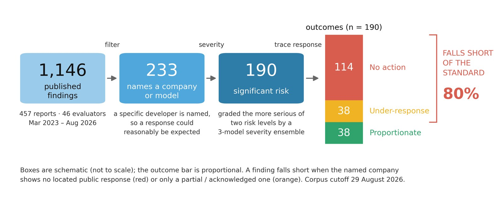

When an evaluator finds a problem, does anything happen?
Government safety institutes and independent evaluators publish findings about named frontier AI models. Identifying a risk is not the same as reducing it. This dataset traces what happened next — whether the named company publicly responded, and whether the response matched the severity of the finding.
of significant-risk findings that name a company have no documented public response.
What counts as a finding
A finding is one discrete, evidence-backed claim made by an evaluator in a public report. Not every published claim qualifies, and that boundary is what makes the headline number mean something.
Three tests, all of which must hold
- Asserted by the evaluator — not a summary of someone else's work, not a comparator score cited in passing.
- Evidence-backed in that report — a measured result, an observed behaviour, or a documented process fact. Opinions, recommendations and plans are not findings.
- Independently codeable — it would warrant its own response on its own terms.
What is deliberately excluded
Four exclusions do most of the work. Each exists to stop the corpus being quietly incomplete.
- Company self-reports. A developer writing about its own models has nobody to respond to. One exception is load-bearing: where a named external evaluator contributes a section to a company system card, that section is in scope and is filed under the evaluator, never the company.
- Ordinary accuracy and hallucination. That literature is enormous and was never censused here, so admitting a slice of it would make the corpus incomplete by its own standard.
- Non-frontier subjects. The finding must concern a named frontier model or AI system, not general machine learning.
- Unverifiable sources. Every number and quote is checked against the document it cites.
How a response is measured
The outcome for each finding is derived, never judged. Two coded columns decide whether a response is owed. A three-model ensemble decides how serious the finding is. A fixed search battery decides whether a response exists. The verdict is a formula over those inputs — no row can be argued into a more interesting result.
Is a response owed?
Two gates. Only findings passing both enter the accountability set, which is the population every headline number is computed over.
Is this an empirical finding about a model's behaviour, capability or safeguards?
Does it name a specific company or model, such that a response could reasonably be expected?
How serious is it?
Every finding is scored against eight dangerous-capability domains by three independent models — Claude Sonnet 5, GPT-5.5 and Gemini 3.1 — using one frozen prompt sent verbatim to all three. Majority vote wins. All three votes are recorded and never overwritten.
Did the company respond?
A fixed five-source battery runs for every finding in the accountability set. All five must be checked before a finding can be recorded as having no response, and the dated search log is kept as the evidence for that.
- The company's newsroom and blog, searched for the evaluator and the model.
- The next model or system card for that family; for pre-deployment work, the launch card itself.
- Security and safety advisories, and product changelogs.
- Any company statement quoted directly inside the evaluator's own report.
- Company primary sources reachable from press coverage.
What kind of response was it?
Four levels, in descending order of what they demonstrate.
- Substantive — a specific, documented change, attributed to the finding.
- Partial — a change claimed but not verifiable, or incomplete.
- Acknowledged — the finding is referenced, but no action follows.
- None — nothing located after the full battery.
Was the response proportionate?
The final outcome is a lookup, not a judgement. Severity and response level determine it with no discretion at any point.
| Severity | Response | Outcome |
|---|---|---|
| Significant risk | Substantive | Proportionate |
| Significant risk | Partial / Acknowledged | Under-response |
| Significant risk | None | Accountability gap |
| Lower risk | Substantive / Partial | Proportionate |
| Lower risk | Acknowledged | Under-response |
| Lower risk | None | Accountability gap |
The same five steps, drawn to scale
Ribbon width is an exact count. Hover any ribbon or node for the underlying numbers. The leftmost stage is not to scale against the rest — it would otherwise flatten everything downstream.
Table view
What the data shows
Every figure is regenerated from the dataset and machine-verified against it before publication. Each one is paired with what it actually tells you — and, where relevant, what it does not.

Most findings never reach the question
The corpus narrows sharply. Only a minority of published findings name a company in a way that makes a response owed, and only some of those clear the significant-risk bar. The outcome bar on the right is the population everything else on this page refers to.

Access predicts response more than anything else
Findings from pre-deployment access — where the evaluator saw the model before release — almost always draw a documented response. Findings made after deployment mostly do not. This is the largest and most statistically robust difference in the dataset.

No clean improvement trend
The shortfall rate does not fall steadily as the ecosystem matures. Year-on-year movement is real but non-monotonic, and the most recent year is partly an artefact of recency — findings published close to the cutoff have had less time to draw a response.

The gap is not concentrated in one topic
Jailbreaks, cyber, alignment, autonomy and bio-chem all show substantial shortfall. Colour here encodes magnitude only — a deliberately neutral ramp, so that a cell's shade never implies a verdict the numbers do not support.

Almost no binding policy action
Government follow-up is tracked separately from company response, in official sources only. The overwhelming majority of findings produce no identifiable policy uptake at all, and binding action is vanishingly rare.

Government institutes fare better than third parties
Findings published by government safety institutes draw proportionate responses more often than those from independent third-party evaluators. Both groups nonetheless show a majority shortfall.

Acting quietly still counts
Where a company does respond, it often names the evaluator and the finding — but not always. Attribution is recorded as a separate field precisely so that a company acting without publicly crediting the finding is not penalised in the outcome.

Why most findings are not in the headline
Only a fraction of the corpus is accountability-relevant. The rest are real, source-verified findings that fail one of the two gates — methodology work, governance observations, reassuring nulls, or results with no named company to answer for them.
Cut the data yourself
These are drawn live from the dataset in your browser rather than exported as images, so the counts behind every bar are inspectable. Hover any element for the exact numbers, or open the table view beneath each chart.
Browse every finding
Each row carries its source, its coded fields, and the reasoning behind its tier.
| Date | Institution | Finding | Models | Severity | Response |
|---|
What this does not measure
Stated plainly, because each of these bounds how the headline should be read.
Public channels only
A company may have acted privately, told the evaluator directly, or fixed the problem without saying so. This measures the public record — what a regulator, journalist or researcher can actually verify from outside.
Absence is measured, not assumed
"No response" means the five-source battery was run and logged with a date, not that nobody looked. Where a source could not be retrieved, the row is recorded as unresolved rather than counted as a negative.
Content, not effect
A substantive response means a specific documented change was published. It does not mean the change was implemented well, or that it worked.